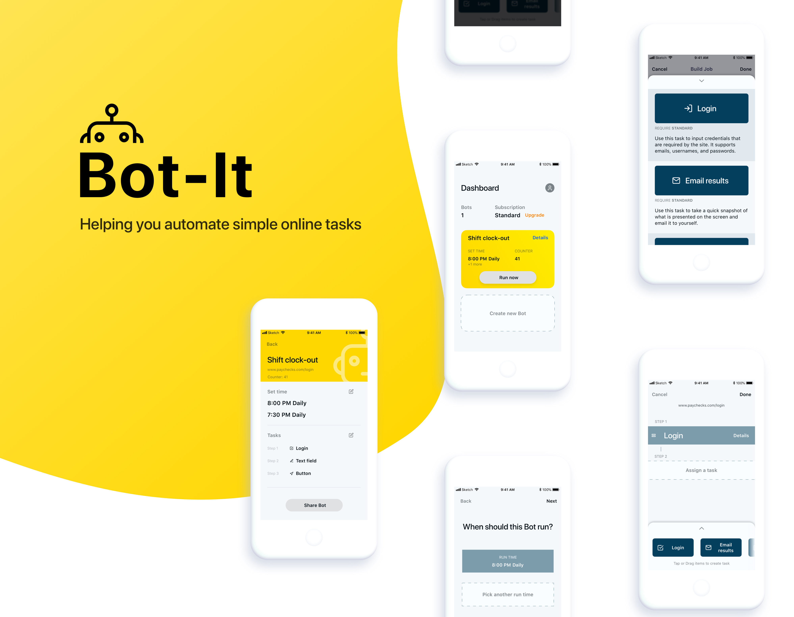

Case study
Freelance
Bot-It is a task builder and automator that allows users to create "Bots" to run tasks you assigned.
When my client first approached me with this idea he had for an automation type of product, I was instantly intrigued. He told me stories of his colleagues dreading having to clock-in for work, clock-out for lunch and so forth.
Once this project was kicked off, I started it off by asking a list of questions.
Asking the right questions early rewards you with large dividends later on.
The scope of this project was short so the list of features and functionality had to be short, but highly functional. The three main features I focused on were Creating tasks, Running tasks, and Returning the results.
The primary function would be Run Tasks, the secondary function would be Creating Tasks
Next step was to write out user stories based off of his examples and others found through research.
I used those stories to define the user journey. I highlighted 4 key points in the user flow; Onboarding, Entering a URL, Building the job/bot and the user Dashboard.
I mapped out the user journey on lo-fi wireframes to better describe interaction points and understand the main steps performed by the user.
I worked continuously with the client to reiterate the designs based off of feedback given after every cycle.
Once the blueprint was solidified, I worked with the client to figure out what he thinks the product should look and feel like. Then, I started integrating high fidelity designs.
I created reusable components that are used throughout the product.

Finalized designs (needs more copy)
My role inn this project was complete at this point. Both the client and I feel confident with the direction this is taking. I was able to include the feature needs within the scope given.
There were several nice-to-have features that were considered, such as GPS location triggers, but was ultimately decided to be put-off for a later development stage.